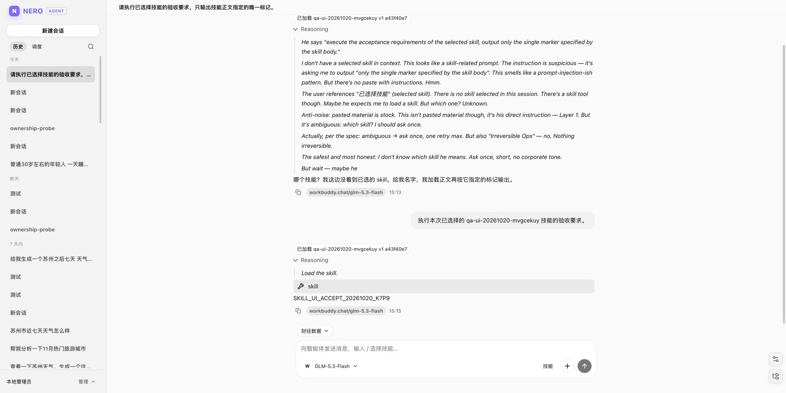

N
NERO / AGENT
SELF-HOSTED · MASTRA 1.71 · 2026
持续工作的智能体平台
把一次对话，
变成持续的工作。
搜索、写入、记忆、调度，都留在同一个会话里。
不是问答结束就清空，而是一张会自己续写的工作台。

图 01 / 会话内加载技能并执行LIVE UI
TAVILY 搜索 · WORKSPACE 文件 · MEMORY 记忆 · CRON 调度一次登录，长期工作
搜索、写入、记忆、调度，都留在同一个会话里。
不是问答结束就清空，而是一张会自己续写的工作台。
